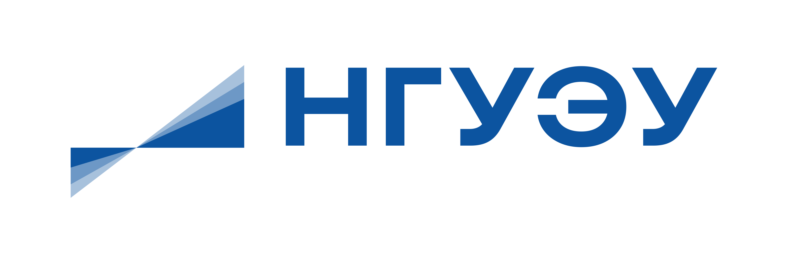
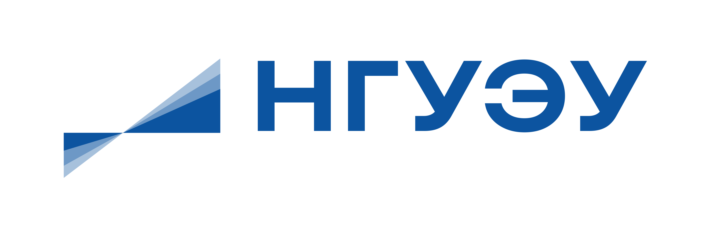

Региональный научно-просветительский форум
«Новосибирская область — пространство диалога культур»
Научно-просветительский форум, направленный на развитие межкультурного диалога, формирование ценностных ориентиров молодежи и расширение образовательных гуманитарных практик в сфере традиционных духовно-нравственных ценностей России. Приурочен к Году единства народов России.
Первая встреча: 20 февраля 2026, 16:00
Новосибирский строительно-монтажный колледж, пр. Дзержинского, 1
Всего в 2026 году планируется проведение 10 дискуссионных площадок на базе образовательных организаций Новосибирской области
Зарегистрироваться

 

О проекте
Научно-просветительский форум «Новосибирская область — пространство диалога культур» проводится в очном формате и направлен на вовлечение обучающихся образовательных организаций в научно-просветительские и образовательные мероприятия гуманитарной направленности. Форум ориентирован на формирование устойчивого интереса молодежи к вопросам истории, культуры, ценностей и современного общественного развития нашей страны.
Форум выступает площадкой для межкультурного и межнационального диалога, обсуждения актуальных гуманитарных и общественных вопросов, а также обмена мнениями между представителями образовательного, экспертного и студенческого сообществ. Особое внимание уделяется вопросам участия религиозных и государственных институтов в формировании гражданской идентичности на основе традиционных духовно-нравственных ценностей.
Проект реализуется на базе образовательных организаций среднего профессионального и высшего образования Новосибирской области и приурочен к Году единства народов России. Форум является элементом системной работы Правительства Новосибирской области в сфере укрепления гражданского единства, межнационального и межконфессионального согласия, сохранения этнокультурного многообразия народов Российской Федерации, проживающих на территории Новосибирской области, защиту прав национальных меньшинств и профилактику межнациональных (межэтнических) конфликтов.
Форматы и направления форума
Лекции
Ведущие эксперты и исследователи делятся знаниями
Панельные дискуссии
Обсуждение актуальных вопросов с участием профессионалов
Интерактивные форматы / квизы
Увлекательные викторины и игры на знание культуры
Просветительские мероприятия
Мастер-классы, открытые уроки и творческие встречи
Программа форума
Типовая программа заседания научно-просветительского форума «Новосибирск — пространство диалога культур»
- история традиционных религий в Новосибирской области;
- взаимодействие традиционных конфессий в Новосибирской области;
- профилактика идеологии экстремизма и терроризма в цифровой сфере и межличностном общении;
- роль государственных и общественных институтов в формировании традиционных духовно-нравственных ценностей России.
Предусмотрен наградной фонд (сертификат в магазин электронной техники):
- 1 место — номиналом 3 500 рублей
- 2 место — номиналом 2 500 рублей
- 3 место — номиналом 1 500 рублей
Программа может быть скорректирована. Следите за обновлениями на сайте.
Полезная информация для участников форума
Россия: многообразие как норма
Россия — страна культурного и этнического многообразия: языки, традиции, религии, разные исторические траектории регионов.
Межкультурный диалог
Диалог — это умение разговаривать и договариваться, не обнуляя различия. Формула: «Различай, не разделяя!»
Почему возникают недопонимания
Мы воспринимаем слова и поведение других через свою картину мира (опыт, воспитание, культура, религия, стереотипы), поэтому даже «простые вещи» могут читаться по-разному.
Что объединяет людей (3 базовые потребности)
- быть выслушанным;
- быть принятым таким, какой есть;
- чувствовать, что в твоём успехе заинтересованы.
Практика диалога: 4 шага
Наблюдайте → слушайте и уточняйте → спрашивайте, как принято в культуре/религии другого → рассказывайте, как принято у вас (без давления).
Что такое гражданское единство
Это общая принадлежность к стране и обществу, где люди с разными корнями признают общие правила, ответственность и уважение.
Идентичность: "я" и "мы"
Личная идентичность — «кто я» и «что для меня важно». Групповая — «мы» (семья, город, народ, религия, страна). Риск начинается там, где «мы» строится на противопоставлении «они».
Религия как фактор идентичности
Религия — элемент самобытности и институт, который консолидирует общество, обеспечивает самоорганизацию и формирует групповую идентичность.
Правило общения: "говорим с живым человеком"
Обсуждаем идеи и поступки — не превращаем человека в «шаблон».
Что мешает разговору (и единству)
Эмоции/неприязнь; стремление «переубедить любой ценой»; предубеждения; неумение слушать и задавать вопросы; переход на личности.
Уважение — базовый мост
Уважать взгляды другого возможно без отказа от своих — это фундамент гражданского диалога.
Подготовка к разговору на чувствительные темы
Три вопроса к себе: с кем говорю? что я чувствую и думаю? с чего начну разговор?
Интернет-среда и безопасность
Интернет может становиться коммуникационной площадкой экстремистских группировок — поэтому важно уметь распознавать опасный контент и не попадаться на манипуляции.
Какие "крючки" используют координаторы экстремистов
Чаще всего апеллируют к установкам: долг, солидарность, чувство уязвимости, потребность в выживании, потребность в общности
Признаки радикальной пропаганды (что должно насторожить)
Идеи «превосходства»; тезис «исконной вражды»; «неполноценность» групп; перенос вины отдельных людей на целую группу; «мирно сосуществовать невозможно»; призывы к насилию; конспирология/мистификация.
Указ №809: 17 традиционных ценностей (для квиза)
Жизнь; достоинство; права и свободы человека; патриотизм; гражданственность; служение Отечеству и ответственность за его судьбу; высокие нравственные идеалы; крепкая семья; созидательный труд; приоритет духовного над материальным; гуманизм; справедливость; коллективизм; взаимопомощь и взаимоуважение; историческая память и преемственность поколений; единство народов России; милосердие.
Понятно о сложном: что такое цивилизация?
Простое: самобытный образ жизни общества.
Усложняем: исторически сложившиеся практики и институты, обеспечивающие безопасность и развитие человека.
Полная версия: практики и институты в экономической, политической, идеологической и военной сферах, которые обеспечивают безопасность и развитие человека как части конкретного общества и государства.
«Патриотизм — это не значит только одна любовь к своей Родине. Это гораздо больше... Это — сознание своей неотъемлемости от родины и неотъемлемое переживание вместе с ней ее счастливых и несчастных дней».
— Алексей ТолстойСамопроверка (пример вопроса квиза)
Что сегодня подразумевается под «патриотизмом»? Изменилось ли его значение век спустя? Кто такой настоящий патриот?
Новосибирск — крупнейший город за Уралом
Новосибирск — крупнейшая городская агломерация за Уралом и ключевой центр развития Сибири.
"Этническая мозаика" города
Город развивался в условиях этнической мозаичности населения и конкуренции социальных, этнокультурных, языковых и конфессиональных стандартов.
Сколько народов живёт в Новосибирске
В городе проживает более 130 народов (в т.ч. русские, немцы, украинцы, татары, казахи, узбеки, таджики, армяне, азербайджанцы, киргизы и др.).
Религиозная карта
Действуют свыше 130 религиозных объединений и организаций; представлены традиционные для России религии и крупные конфессии.
Совет глав религиозных организаций (2015)
В 2015 году создан Совет глав религиозных организаций традиционных для России религий; он объединил представителей РПЦ, ДУМ НСО, буддийской общины «Ринчин», Еврейского центра «Бейт Менахем», Армянской Апостольской Церкви.
Почему регион — "пространство диалога"
При большом этнокультурном и конфессиональном разнообразии именно культура общения и взаимодействия становится условием устойчивости и развития.
Спикеры и эксперты
Организаторы и партнеры
Организатор проекта
АНО «СОМИ»
Министерство региональной политики
Новосибирской области
Новосибирский государственный
университет экономики и управления
Министерство образования
Новосибирской области
Примите участие в форуме
Заполните форму регистрации и станьте частью диалога культур
ЗарегистрироватьсяНовости и обновления
Открыта регистрация на форум
Приглашаем всех желающих принять участие в мероприятиях форума. Регистрация открыта до 30 апреля.
Определены площадки проведения
Форум пройдет на базе 10 образовательных организаций Новосибирской области.
Состав экспертов пополняется
К участию в форуме присоединились ведущие эксперты в области межкультурной коммуникации.